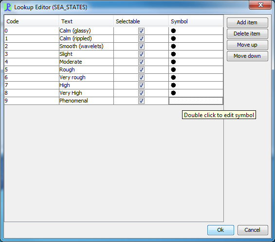

The LOOKUP Type is used on a User Defined Form to create a drop down box of options
Logger Forms use a standard user-editable PAMGuard lookup box for which the contents editing has already been built into the software. To add items to a lookup table, simply open right click on the LOOKUP control on the Logger form and select "Edit list ..." from the drop down menu. The following dialog will then appear which allows to add, edit and modify lookup items.

Order
The order in which the controls are read in by the program
Title
The text to be shown on the display
Topic
The lookup topic
Length
Length of the input field in characters
Autoclear
The control is automatically cleared when data is saved
DbTitle
Column heading for the output database. (This will default to the Title if this filed is not completed)
Hint
Text for a hint to be displayed when entering data in the control
PostTitle
Additional text to display after the input box.
Required
Forces the user to fill in the input box before the form can be saved
Plot
Data from this form can be plotted if a lookup item has been selected. Note that there are extensive plot options available from the Display / Logger forms menu which will allow you to select what to plot based in the individual lookup items selected
Here you can see the TOPIC field noted in the title bar as SEA_STATES. Add items as you wish with Code, Text, Selectable and Symbol. Code will be the shortcut able to be entered in the first part of the control and Text is what shows in the drop-down. A Symbol must be entered at the moment though as you can see they can be the same and at the moment only used on map. E.g. would be used for a sighting but for SEA_STATES it will be unused.
NMEA_Module
The name of the NMEA module from which data should be harvested
NMEA_String
The name of the NMEA string containing the data
NMEA_Position
The position of the data item in the NMEA string. Strings are comma separated, the 0'the item will be the string name, the 1'st item the one after that, etc.
The NMEA data should ideally be the code of one of the look up items. i.e. you should populate your lookup control with all possible values. If the NMEA string does not match any of the look up codes, a null value will be selected.